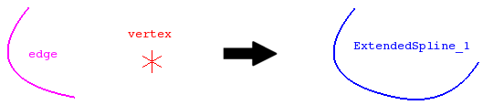

cfdmsh 4.0 documentation
cfdmsh 4.0 documentation cfdmsh 4.0 documentation


Extends an edge to a vertex position.
This function cuts an edge into a large number of vertexes and add to them a vertex given by the user. Then, a spline is created from this new set of vertexes. The distance between the user vertex and the extrema of the input edge determine if the edge is extended from its 'start' or its 'end'.
The user can also ask for a straight extension. In this case there are intermediate vertexes between the edge and the target vertex to ensure the extension in straight.
def ExtendSpline(edge_and_vertex = [None], np = 20, pos = "auto", strat = "flex", curv = True, tol = 1e-7, single = True, add = True, infa = False, dim = 1):

| Name | Description | Type | GUI selection [?] | Selection by name [?] | Recursive [?] | Default value |
|---|---|---|---|---|---|---|
| edge_and_vertex | The edge to extend and the target vertex. | List of 1 Edge + 1 Vertex |
yes | yes | - | None |
| np | See here. In this case, correspond to the number of vertexes created on the input edge. |
Integer | - | - | - | 10 |
| pos | If equals "before" or "after", the edge is extended from it start or its end respectively (according to its orientation). If equals "auto", the function decides itself. | String | - | - | - | "auto" |
| strat | Defines the extension strategy. If equals "rigid" or "flex", the edge is respectively extended with or without a constrain on the straightness of the extension. | String | - | - | - | "flex" |
| curv | See here. | Boolean | - | - | - | True |
| single | See here. | Boolean | - | - | - | True |
| add | See here. | Boolean | - | - | - | True |
| infa | See here. | Boolean | - | - | - | False |
| dim | See here. | Integer | - | - | - | 1 |
| dim Value [?] | single Value [?] | Type | Number | Name |
|---|---|---|---|---|
| 0 | False | Vertex | n | "ExtendedSpline (Vertex)" |
| 0 | True | Compound of Vertexes | 1 | "ExtendedSpline (Vertexes)" |
| 1 | - | Edge | 1 | "ExtendedSpline" |
from cfdmsh import * # To adapt to the cfdmsh installation method
vertex1 = geompy.MakeVertex(100, 20, 100)
vertex2 = geompy.MakeVertex(-50, -80, -30)
vertex3 = geompy.MakeVertex(100, 0, -100)
vertex4 = geompy.MakeVertex(20, 100, 75)
vertex5 = geompy.MakeVertex(20, -100, 75)
AddToStudy([vertex1], "vertex")
curve = geompy.MakeInterpol([vertex2, vertex3, vertex4, vertex5])
AddToStudy(curve, "curve")
extended_spline = ExtendSpline([curve, vertex1])
extended_spline_vertexes = ExtendSpline([curve, vertex1], dim = 0)
-
cfdmsh 4.0 documentation
tougeron-cfd.com © 2016